i took these photos in westwood in 2019, as a memento before i left UCLA. some of these are
iconic buildings in the neighborhood, but most are just apartments that i liked and wanted to
remember. i was particularly obsessed with all the dingbats that have survived in the
neighborhood, and wanted to photograph my favorites.
the quaint little dingbats and mid-century apartments were never meant to last and few of
those that remain are in good shape. at the same time, UCLA is continuing to grow (my first
year it accepted more freshman than any other American university) and property values are
continuing to rise. newer, bigger apartment buildings had already been built before i
arrived, and plenty more properties were under construction. it's not an exaggeration to say
that the neighborhood i knew lives on borrowed time.
so i think of this collection as a bit of a memorial, a memento mori even, of the parts of
westwood that i knew and loved.
note—photos uploaded at a low resolution for quicker loading.
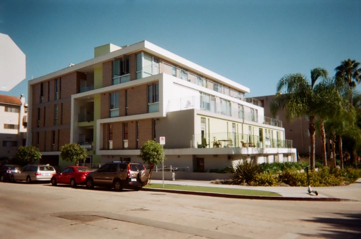
Ophir Terrace. I used to live here.
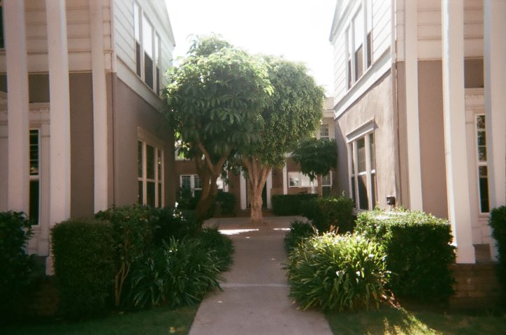
Courtyard apts, where I watched an improv show.
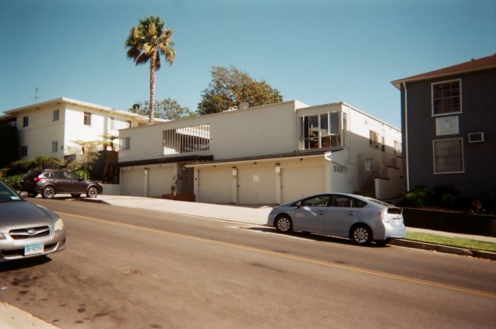
I just like this ugly blank facade and row of garages.
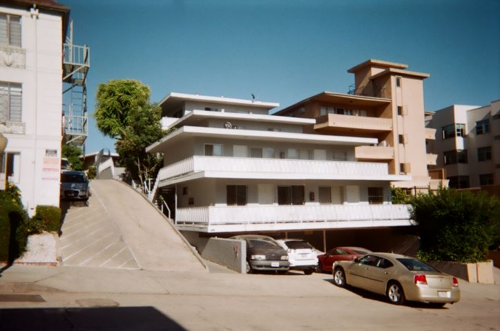
Dingbat with some levels stacked up a hill. I think I almost moved here.
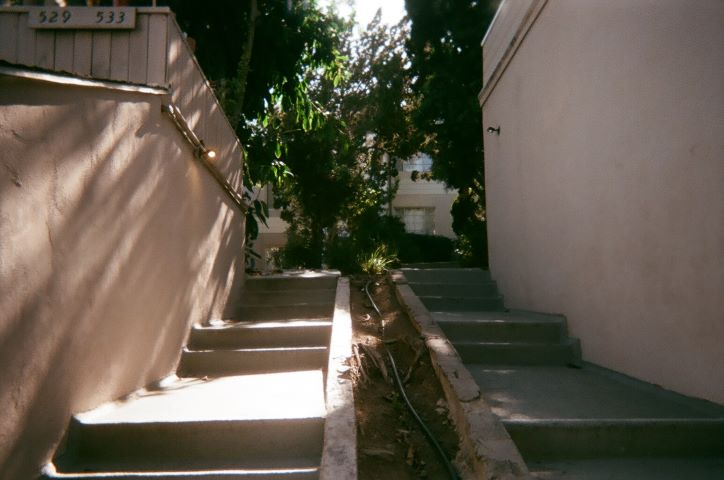
Lots of duplexes with funny little stairs. Dropped someone off here after a heavy pre-game.
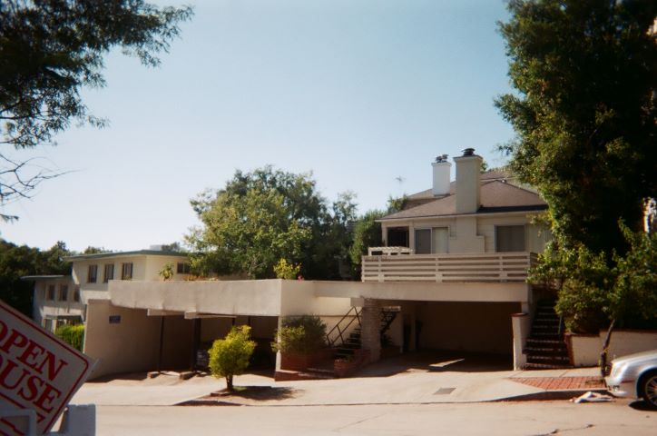
I think the roofs of these carports are decks for houses set further back? Cool.
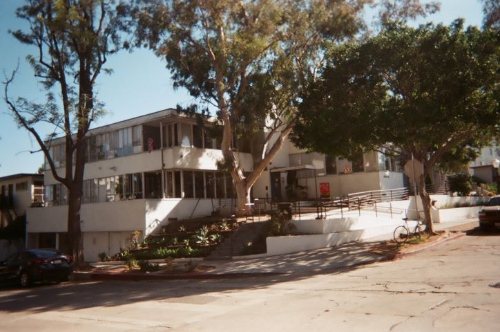
Robison Hall, designed by Richard Neutra in 1937, and now part of the Coop.
(allegedly Jim Morrison lived here)
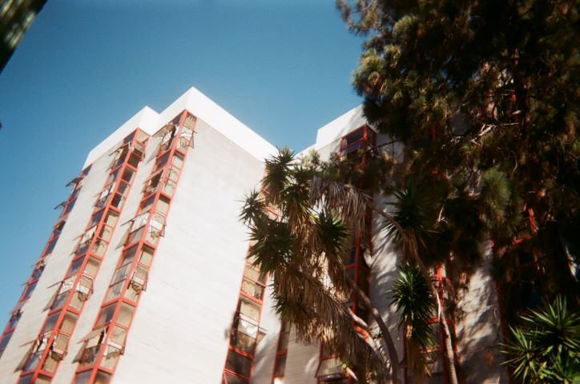
Hardman-Hansen Hall, part of the University Coop Housing Association.
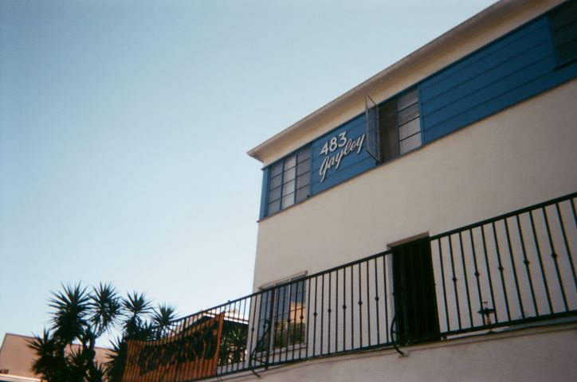
Dingbat across from campus, built c.1950. Love the blue ribbon and font choice.
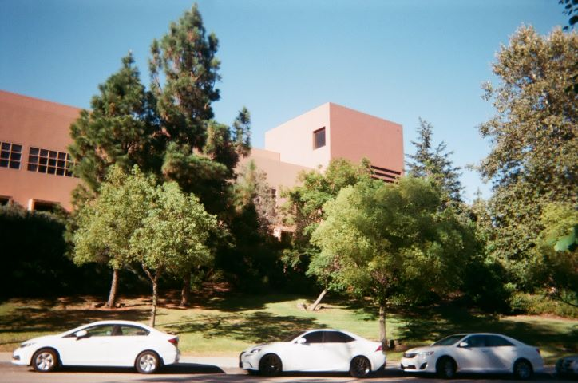
Tom Bradley International Hall, designed by Ricardo Legorreta in 1998.
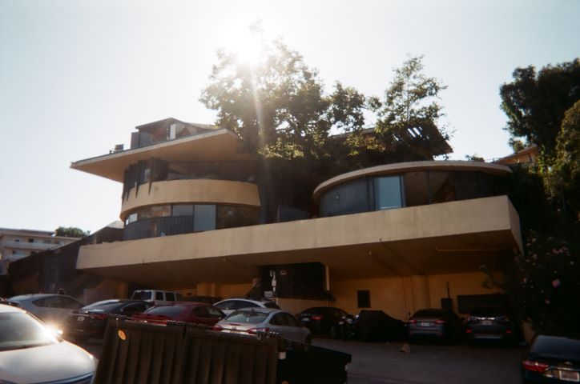
"The Treehouse," designed by John Lautner in 1949. Went to a UCLA Radio party here.
(allegedly Jim Morrison lived here)
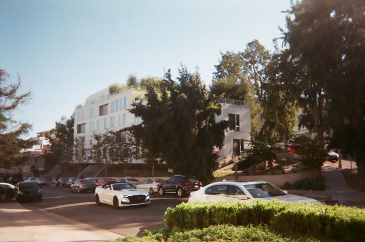
New apartment building by Lorcan O'Herlihy Architects c.2015.
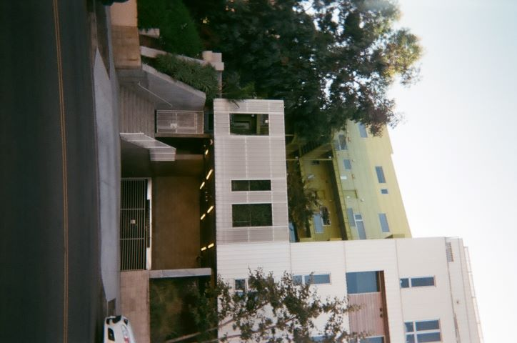
Really love the metal cladding and colors!
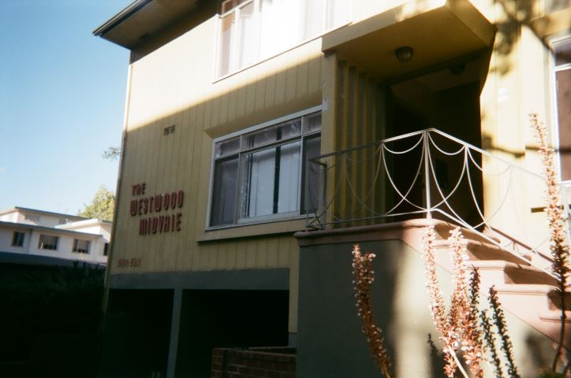
Dingbat built c.1952. I think some friends lived here, but I don't remember.
If they did, I played history's worst game of Catan here.
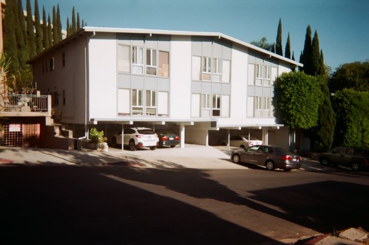
Dingbat built c.1954. I just really love it. Those windows sit on the floor.
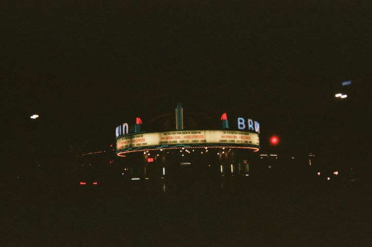
Fox Bruin, built in 1937 and seen in Tarantino's "Once Upon A Time In Hollywood."
I watched a lot of movies here, including Thor: Ragnarok, Black Panther, and
Infinity War.
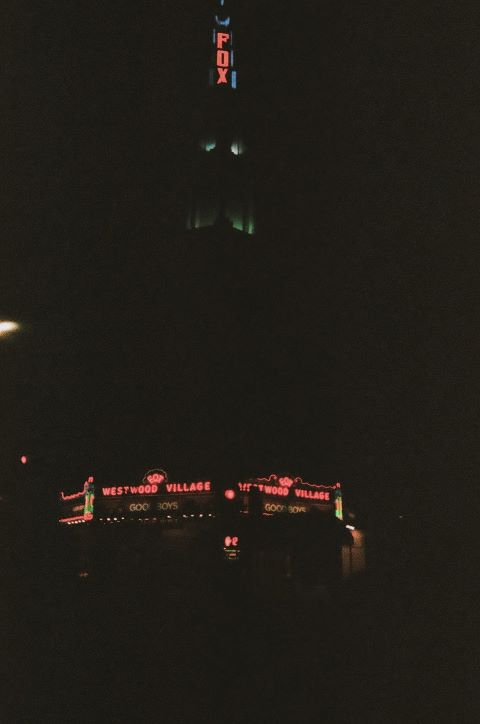
The even more iconic Fox Westwood Village, built in 1931. Watched some movies here too.